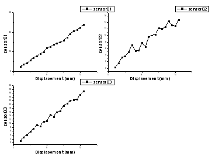

ラベルから複数パネルを一括作成
MultiPanel-Graph
- 
必要なデータ
少なくとも1つのY列、あるいは、その部分領域を選択する必要があります。各Y列について、対応するX列がある場合、X列はX値を提供します。そうでない場合、Y列のサンプリング間隔または行番号を使用します。
グラフ作成
データを選択します。
メニュー を選択します。
または、
「2Dグラフギャラリー」ツールバーのラベルから複数パネルを一括作成ボタン をクリックします。
plotbylabelダイアログボックスが開きます。
選択されたデータセットのグループ識別子、グラフタイプ、グラフテンプレート、パネル配置、間隔を指定します。OK をクリックして、グラフを作成します。このダイアログの詳細情報は、このページを参照してください。
テンプレート
MGROUPS.OTPU (Originプログラムフォルダにインストールされています)
ノート
- Origin 2022以降、複数の連続X列があり、次にXXXY列などの隣接するY列が1つある場合は、フライアウトメニューからXによりワークシートから選択を選択して、入力として複数のXY範囲を選択できます。
- ラベルから複数パネルを一括作成によるグラフは複数のレイヤを持ちます。レイヤの数は、入力データのグループの数で決定されます。入力データは、グループ識別子で選択された列ラベル行またはX列によってグループ化されます。
- Origin 2018bから、作図の詳細のレイヤタブにある共通の表示を使用して、複数レイヤグラフのレイヤ、プロット、軸プロパティを一括で設定できます。詳細情報は、(作図の詳細)レイヤタブの設定を参照してください。
- Origin 2021b以降、グラフテンプレートコントロールを使用してグラフテンプレートを指定し、テンプレートとともに保存されたフォーマットをパネルに適用することができます。デフォルトでは、組み込みのテンプレートmgroups.optuがパネルで使用されます。